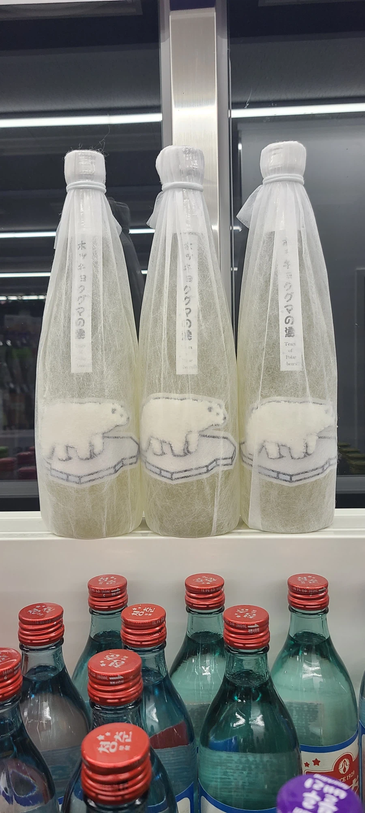
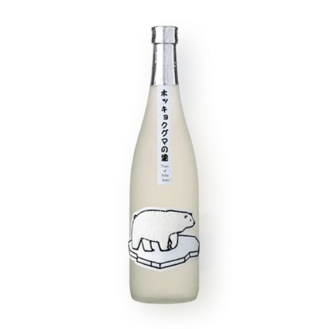

68 · 4 · 5 시간 전 · 원문


북극곰의 눈물 ㅋㅋㅋㅋ
수집 당시 댓글 4개
고구마우유 · 5 시간 전
콘푸로스트 · 4 시간 전
사케 추천 좀…
↳ 답글 · 김씨 · 3 시간 전
센킨 배맛나고 좋더라 데프콘 유튜브에 나옴
↳ 답글 · 개붕야호 · 2 시간 전
간바레 오또상

댓글
수집 당시 댓글 4개
고구마우유 · 5 시간 전
콘푸로스트 · 4 시간 전
사케 추천 좀…
· 김씨 · 3 시간 전
센킨 배맛나고 좋더라 데프콘 유튜브에 나옴
· 개붕야호 · 2 시간 전
간바레 오또상